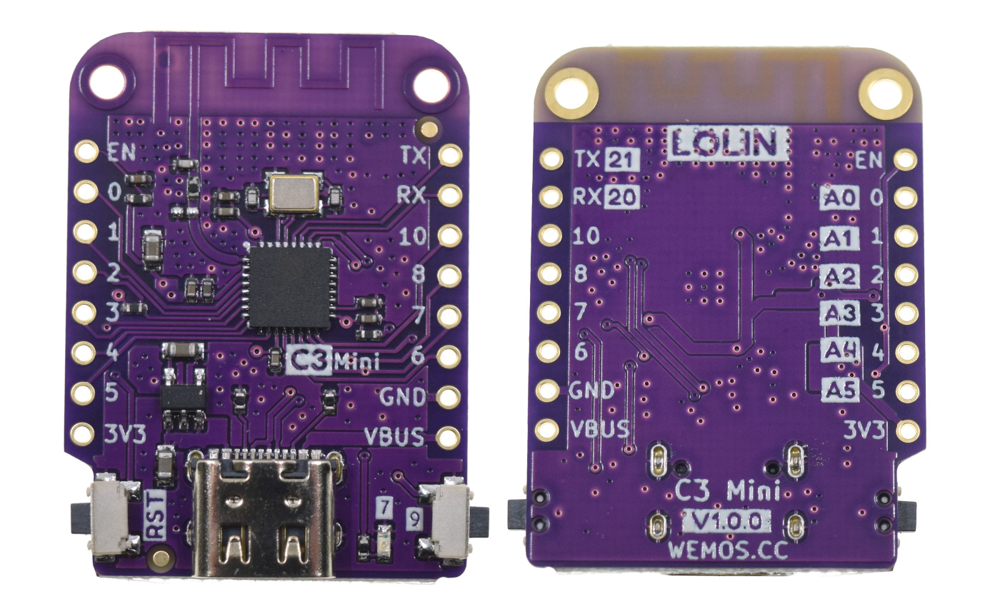
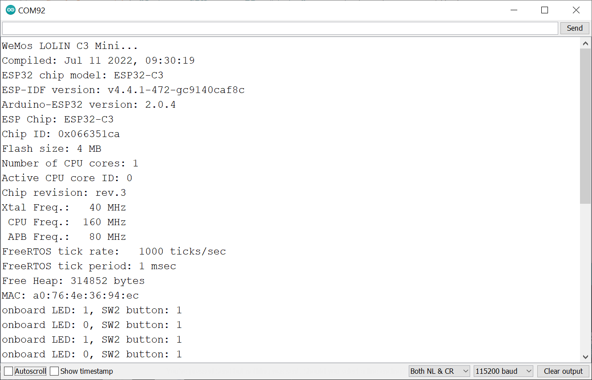

การเริ่มต้นใช้งานบอร์ด WeMos ESP32-C3 Mini#
▷ ESP32-C3#
ESP32-C3 Series (Datasheet | Technical Manual) เป็นชิปประเภทไมโครคอนโทรลเลอร์ (MCU: Microcontroller Unit) หรือ MCU-based System-on-Chip ของบริษัท Espressif Systems และได้มีการเปิดตัวครั้งแรกในช่วงปลายปีพ.ศ. 2563 ชิปรุ่นนี้มีซีพียู 32 บิต แบบแกนเดียว (Single-Core) ที่ทำงานได้ตามสถาปัตยกรรมของชุดคำสั่งที่เรียกว่า RISC-V (อ่านออกเสียงว่า Risk-Five)
บทความนี้จะกล่าวถึง การทดลองใช้งานบอร์ด ESP32 C3 Mini (v1.0.0) ของ WeMos.cc ซึ่งเป็นบริษัทในประเทศจีน แต่ก็ยังมีบอร์ดไมโครคอนโทรลเลอร์อื่นอีกที่ใช้ชิป ESP32-C3 ให้เลือกใช้งานได้หลายรูปแบบ จากหลายบริษัทผู้ผลิต ตามที่ได้เคยนำเสนอไว้ในบทความ: "การเริ่มต้นใช้งานชิป ESP32-C3 (RISC-V)"
หลายคนอาจเคยใช้บอร์ดของ WeMos มาก่อน เช่น บอร์ดที่ใช้ชิป ESP8266EX (เช่น บอร์ด WeMos D1 Mini / Lite และบอร์ด D1 Mini Shields ประเภทต่าง ๆ ) และ ESP32 (เช่น บอร์ด LOLIN D32) เป็นต้น หากพิจารณาขนาดของบอร์ดและตำแหน่งของขา จะเห็นได้ว่า บอร์ด WeMos C3 Mini ยังคงเหมือนบอร์ด WeMos D1 Mini ดังนั้นจึงมีข้อดีอย่างหนึ่งคือ เราสามารถใช้ WeMos Shields เหมือนเดิมได้
รูป: บอร์ด WeMos D1 Mini (ESP8266EX-based) และตัวอย่างโมดูล WeMos Shields

รูป: บอร์ด WeMos C3 Mini (V1.0.0) (มุมมองด้านหน้าและด้านหลัง)
รูป: ตำแหน่งขาบนบอร์ด WeMos C3 Mini (V1.0.0) - Pinout
บอร์ด WeMos ESP32-C3 Mini ถือว่ามีขนาดเล็ก แต่หากต้องการใช้บอร์ด ESP32-C3 ที่มีขนาดเล็ก ก็ลองพิจารณาตัวเลือกอื่นได้อีก เช่น
- Seeed Studio XIAO ESP32-C3
- M5Stack M5Stamp C3U
- DFRobot Beetle ESP32-C3
- Adafruit QT Py ESP32-C3 WiFi Dev Board
รูป: ตัวอย่างบอร์ด ESP32-C3 ที่มีขนาดเล็ก และใช้งานได้กับเบรดบอร์ด
▷ WeMos ESP32-C3 Mini#
คุณสมบัติของบอร์ดโดยสรุปคร่าว ๆ มีดังนี้
- ใช้ชิป ESP32-C3FH4 ซึ่งได้รวม 4MB SPI Flash ไว้ภายในแล้ว
- มีตัวประมวลผลแบบแกนเดียว 32-bit RISC-V @160MHz
- รองรับ Wi-Fi (2.4GHz) และ Bluetooth 5 (LE)
- มีระดับแรงดันไฟฟ้าในการทำงาน: 3.3V Operating Voltage
- มี 12 ขา สำหรับ Digital I/O Pins
- มีวงจร LED (Blue) อยู่บนบอร์ด ต่อกับขา GPIO-7
- มีขาอินพุต-แอนะล็อก 6 ขา (12-bit ADC, A0..A5 pins)
- มีปุ่มรีเซต (RST) ซึ่งต่อกับขา EN ของชิป ESP32-C3
- มีปุ่ม SW2 (BOOT) ซึ่งต่อกับขา GPIO-9
- ทำงานแบบ Active-Low แต่ไม่ได้ต่อตัวต้านทานแบบ Pull-up
- ใช้สำหรับเข้าสู่โหมด Bootloader เมื่อมีการรีเซตการทำงาน และอัปโหลดโปรแกรมผ่านทางพอร์ต USB
- มีไอซี ME6211C33 (SOT23-5) ซึ่งเป็น LDO Voltage Regulator
- ทำหน้าที่แปลงแรงดันจาก VBUS ให้ได้เอาต์พุต 3.3V / 500mA (max.) สำหรับการทำงานของวงจรบนบอร์ด
- สามารถใช้ไฟเลี้ยง VBUS (+5V) จากพอร์ต USB Type-C หรือขาจาก VBUS
- แต่เนื่องจากไม่มีการต่อไดโอดป้องกันและกำหนดทิศทางการไหลของกระแส ดังนั้นจึงต้องระมัดระวังในการต่อวงจร หากเสียบสาย USB เชื่อมต่อกับคอมพิวเตอร์ และป้อนแรงดันไฟเลี้ยง 5V จากภายนอกพร้อมกัน
- ไม่ได้ใช้ชิป USB-to-Serial Bridge
- สามารถรับส่งข้อมูลแบบอนุกรมโดยใช้ USB-CDC เนื่องจากชิป ESP32-C3 รองรับการใช้งาน Native USB และ
- รองรับการใช้งานรูปแบบที่เรียกว่า USB-to-JTAG interface (ใช้สำหรับการดีบักการทำงานของโปรแกรมในฮาร์ดแวร์ ร่วมกับโปรแกรม OpenOCD / GDB)
- ขา GPIO-20 / GPIO-21 ใช้สำหรับสัญญาณ RXD / TXD ใช้สำหรับ Hardware Serial (UART) ตามลำดับ
- ขา GPIO-18 / GPIO-19 จะใช้สำหรับ USB D- / D+ (คู่สัญญาณข้อมูลของบัส USB) ตามลำดับ
- ในการเชื่อมต่อกับบัส I2C แนะนำให้ใช้ขา GPIO-8 / GPIO-10 สำหรับสัญญาณ SDA / SCL ตามลำดับ
- ในการเชื่อมต่อกับบัส SPI แนะนำให้ใช้ขา GPIO-2 / GPIO-3 / GPIO-4 สำหรับสัญญาณ SCK / MISO / MOSI ตามลำดับ
- ข้อสังเกต: บริษัท WeMos ได้แนะนำให้ตั้งค่ากำลังส่ง Tx Power ไว้ไม่เกิน 8.5 dBm เมื่อเปิดใช้งาน Wi-Fi เนื่องจากข้อจำกัดของไอซี ME6211C33 ในการจ่ายกระแสให้ ESP32-C3
รูป: ผังวงจร WeMos C3 Mini (V1.0.0) - Schematic (.pdf)
▷ การเขียนโปรแกรมด้วย Arduino#
Arduino-ESP32 Core ตั้งแต่เวอร์ชัน v2.0.0+ ได้ใช้ ESP-IDF v4.4+ เป็นพื้นฐานในการพัฒนาซอฟต์แวร์ และรองรับการเขียนโปรแกรมสำหรับบอร์ดที่ใช้ชิป ESP32, ESP32-S2, ESP32-S3 และ ESP32-C3 เป็นต้น และใช้ได้กับทั้ง Arduino IDE และ VS Code IDE + PlatformIO extension (สามารถศึกษาการใช้งานได้จากเอกสารออนไลน์ Arduino-ESP32 Online Documentation)
ในบทความนี้จะมาลองใช้ Arduino-ESP32 Core สำหรับบอร์ด ESP32-C3
โดยจะต้องติดตั้งไฟล์ package_esp32_index.json (เป็น Stable Version) สำหรับ Arduino IDE ก่อน
URL: https://raw.githubusercontent.com/espressif/arduino-esp32/gh-pages/package_esp32_index.json
รูป: การติดตั้งหรืออัปเดต Arduino ESP32 Core (เช่น เลือกใช้เวอร์ชัน v2.0.4) สำหรับ Arduino IDE
รูป: การตั้งค่าสำหรับตัวเลือกต่าง ๆ ที่เกี่ยวข้องกับการใช้งาน ESP32-C3
▷ ตัวอย่าง Arduino Sketches#
มาลองดูตัวอย่าง Arduino Sketches สำหรับทดลองใช้กับบอร์ด WeMos LOLIN C3 Mini
ตัวอย่างโค้ดที่ 1:
// WeMos ESP32-C3 Mini board
#include "esp_arduino_version.h"
#include "esp_idf_version.h"
#include "esp_chip_info.h"
#define LED_PIN (7) // onboard LED (GPIO-7)
#define SW2_PIN (9) // SW2/BOOT button, active-low (GPIO-9)
String str;
void show_esp_info() {
esp_chip_info_t chip_info;
// get ESP32 chip info
esp_chip_info( &chip_info );
char sbuf[32];
switch (chip_info.model) {
case CHIP_ESP32:
sprintf( sbuf, "ESP32" ); break;
case CHIP_ESP32S2:
sprintf( sbuf, "ESP32-S2" ); break;
case CHIP_ESP32S3:
sprintf( sbuf, "ESP32-S3" ); break;
case CHIP_ESP32C3:
sprintf( sbuf, "ESP32-C3" ); break;
case CHIP_ESP32H2:
sprintf( sbuf, "ESP32-H2" ); break;
default:
sprintf( sbuf, "ESP Unknown" ); break;
}
Serial.printf( "ESP Chip: %s\n", sbuf );
// show the ESP32 unique chip ID and Flash size (MBytes)
if (esp_flash_init(esp_flash_default_chip)==ESP_OK) {
uint64_t id = 0; // 64-bit value
uint32_t flash_size = 0; // flash size in bytes
if (esp_flash_read_unique_chip_id(NULL, &id)==ESP_OK) {
Serial.printf( "Chip ID: 0x%08x\n", id );
}
if (esp_flash_get_size(NULL, &flash_size)==ESP_OK) {
Serial.printf( "Flash size: %lu MB\n", flash_size/(1024*1024) );
}
}
Serial.printf( "Number of CPU cores: %u\n", chip_info.cores );
Serial.printf( "Active CPU core ID: %lu\n", cpu_hal_get_core_id() );
Serial.printf( "Chip revision: rev.%u\n", chip_info.revision );
Serial.printf( "Xtal Freq.: %4lu MHz\n", getXtalFrequencyMhz() );
Serial.printf( " CPU Freq.: %4lu MHz\n", getCpuFrequencyMhz() );
Serial.printf( " APB Freq.: %4lu MHz\n", getApbFrequency()/1000000UL );
Serial.printf( "FreeRTOS tick rate: %lu ticks/sec\n", pdMS_TO_TICKS(1000) );
Serial.printf( "FreeRTOS tick period: %lu msec\n", portTICK_PERIOD_MS );
Serial.printf( "Free Heap: %lu bytes\n", esp_get_free_heap_size() );
// show MAC address
uint8_t mac[8];
if ( esp_read_mac(mac,ESP_MAC_WIFI_STA)==ESP_OK ) {
Serial.printf( "MAC: %02x:%02x:%02x:%02x:%02x:%02x\n",
mac[0],mac[1],mac[2],mac[3],mac[4],mac[5] );
}
Serial.flush();
delay(10);
}
void setup() {
Serial.begin(115200);
while (!Serial) { delay(1); } // wait for serial port to connect.
pinMode( LED_PIN, OUTPUT );
pinMode( SW2_PIN, INPUT_PULLUP );
// wait until the SW2 button is pressed or after 5-second timeout
uint32_t timeout_ms = millis() + 5000; // 5 seconds
while ( millis() < timeout_ms ) {
if ( !digitalRead(SW2_PIN) ) {
Serial.println( F("SW2 button is pressed\n") );
break;
}
delay(10);
}
Serial.println( F("WeMos LOLIN C3 Mini...") );
Serial.println( F("Compiled: " __DATE__ ", " __TIME__) );
Serial.printf( "ESP32 chip model: %s\n", ESP.getChipModel() );
// show ESP-IDF version
Serial.printf( "ESP-IDF version: %s\n", ESP.getSdkVersion() );
// show the Arduino-ESP32 version
Serial.printf( "Arduino-ESP32 version: %d.%d.%d\n",
ESP_ARDUINO_VERSION_MAJOR,
ESP_ARDUINO_VERSION_MINOR,
ESP_ARDUINO_VERSION_PATCH );
Serial.flush();
// show esp32 chip & system info
show_esp_info();
}
void loop() {
int next_state = !digitalRead( LED_PIN );
digitalWrite( LED_PIN, next_state );
str = "onboard LED: ";
str += next_state;
str += ", SW2 button: ";
str += digitalRead( SW2_PIN );
Serial.println( str.c_str() );
Serial.flush();
delay( 500 );
}

รูป: ตัวอย่างข้อความเอาต์พุตที่ปรากฎใน Arduino Serial Monitor เมื่อได้ทดสอบการทำงานของโค้ดตัวอย่างที่ 1
ตัวอย่างโค้ดที่ 2: สาธิตการเชื่อมต่อกับเครือข่าย WiFi ตามที่ระบุไว้โดย SSID และรหัสผ่านในการเชื่อมต่อ
เมื่อเชื่อมต่อกับเครือข่าย WiFi ได้แล้ว จะมีการตั้งค่าวันเวลาของระบบโดยใช้ NTP (Network Time Protocol) และสื่อสารกับเครื่องแม่ข่ายในอินเทอร์เนต็ เช่น pool.ntp.org และถัดไปจะเป็นการตรวจสอบหาระบบเครือข่าย WiFi บริเวณโดยรอบ
#include <WiFi.h>
#include <time.h>
#define WIFI_SSID "xxxxxxxxxxxx"
#define WIFI_PASSWD "xxxxxxxxxxxx"
const char* ntp_server = "pool.ntp.org";
const long gmt_offset_sec = (7 * 3600); // GMT+7
const int daylight_offset_sec = 0;
void setup() {
Serial.begin(115200);
while (!Serial){ delay(10); }
Serial.println( "ESP32-C3 Mini v1.0.0" );
// use WiFi STA (station mode)
WiFi.mode( WIFI_STA );
WiFi.disconnect();
// set WiFi Tx power to 11dBm (see: WiFi/WiFiGeneric.h)
wifi_power_t tx_power = WIFI_POWER_11dBm;
WiFi.setTxPower( tx_power );
delay(100);
// connect to Wi-Fi AP
WiFi.begin( WIFI_SSID, WIFI_PASSWD );
// wait until Wi-Fi is connected.
while ( WiFi.status() != WL_CONNECTED ) {
Serial.print( "." );
delay(500);
}
Serial.println( "" );
// show the IP address assigned by DHCP
Serial.printf( "IP address: %s\n",
WiFi.localIP().toString().c_str() );
// see: <arduino-esp32>/cores/esp32/esp32-hal-time.c
// set local date and time using NTP
configTime( gmt_offset_sec, daylight_offset_sec, ntp_server );
// show current date and time
show_localtime();
delay(2000);
// disconnect WiFi network, but keep the WiFi active
WiFi.disconnect(false);
}
void show_localtime(){
struct tm timeinfo;
uint32_t timeout_ms = 5000;
if( !getLocalTime(&timeinfo, timeout_ms) ) {
Serial.println( "Failed to get local time!" );
} else {
char sbuf[32];
strftime( sbuf, 31, "%A, %B %d %Y %H:%M:%S", &timeinfo );
Serial.println( sbuf );
}
Serial.flush();
}
void wifi_scan() {
Serial.print( "WiFi scan (synchronous mode) started..." );
int n = WiFi.scanNetworks();
Serial.println( " done" );
if ( n==0 ) {
Serial.println( "No WiFi networks found..." );
} else {
Serial.printf( "WiFi networks found: %d\n", n );
for ( int i=0; i < n; ++i ) {
// show SSID and RSSI for each network found
Serial.printf( "%2d) SSID='%s', RSSI=%d, CHANNEL=%d\n", (i+1),
WiFi.SSID(i).c_str(), WiFi.RSSI(i), WiFi.channel(i) );
}
}
Serial.println( "" );
Serial.flush();
}
void loop() {
wifi_scan();
show_localtime();
delay( 2000 );
}
ตัวอย่างโค้ดที่ 3: สาธิตการตรวจสอบอุปกรณ์ที่เชื่อมต่อกับบอร์ด ESP32-C3 ด้วยบัส I2C
(เลือกใช้ขา GPIO-8 & GPIO-10 สำหรับสัญญาณ SDA & SCL ตามลำดับ)
#include <Wire.h>
#define I2C_SDA_PIN (8) // GPIO-8
#define I2C_SCL_PIN (10) // GPIO-10
void setup() {
Serial.begin( 115200 );
while (!Serial) { delay(10); }
// set I2C pins for ESP32-C3 Mini board
Wire.begin( I2C_SDA_PIN, I2C_SCL_PIN );
Wire.setClock( 100000 ); // 100kHz
}
void i2c_scan() {
int n_devices = 0;
Serial.println( "Scanning I2C bus..." );
Serial.print( " " );
for ( uint8_t col=0; col < 16; col++ ) {
Serial.printf( "%3x", col );
}
Serial.println( "" );
uint8_t addr=0;
for( uint8_t row=0; row < 8; row++ ) {
Serial.printf( "%02x:", row << 4 );
for ( uint8_t col=0; col < 16; col++ ) {
if ( row == 0 && addr<=1 ) {
Serial.print(" ");
} else {
Wire.beginTransmission( addr );
if ( Wire.endTransmission()>0 ) {
Serial.printf( " --" );
} else {
Serial.printf( " %2x", addr );
n_devices++;
}
}
addr++;
}
Serial.println( "" );
}
Serial.println( "---------------------\n\n" );
Serial.flush();
}
void loop() {
i2c_scan();
delay(5000);
}
รูป: ตัวอย่างข้อความเอาต์พุตที่แสดงการตรวจสอบอุปกรณ์ที่เชื่อมต่อกับ ESP32-C3 ด้วยบัส I2C (มี 3 อุปกรณ์เชื่อมต่ออยู่)
ในรูปตัวอย่าง (เรียงจากซ้ายไปขวา) จะเห็นได้ว่า มีอุปกรณ์ 3 ชนิด เชื่อมต่อกับบัส I2C เดียวกัน ได้แก่
- GY-302 BH1750 Light Sensor
- GY-213V SI7021 Tempeature & Humidity Sensor และ
- CJMCU-8574 8-bit I/O Expander
รูป: การต่อวงจรเพื่อเชื่อมต่ออุปกรณ์ 3 ชนิด ในระบบบัส I2C เดียวกัน (3.3V logic level)
ตัวอย่างโค้ดที่ 4: สาธิตการอ่านค่าจากโมดูล BH1750 Ambient Ligiht Sensor โดยใช้บัส I2C และใช้คำสั่งของไลบรารี BH1750 สำหรับ Arduino
#include <Wire.h>
#include <BH1750.h> // https://github.com/claws/BH1750
#define I2C_SDA_PIN (8) // GPIO-8
#define I2C_SCL_PIN (10) // GPIO-10
#define BH1750_ADDR (0x23)
BH1750 bh1750( BH1750_ADDR );
void setup() {
Serial.begin( 115200 );
while (!Serial) { delay(10); }
// set I2C pins for ESP32-C3 Mini board
Wire.begin( I2C_SDA_PIN, I2C_SCL_PIN );
Wire.setClock( 100000 ); // 100kHz
// set operating mode for BH1750:
// - lx lux precision
// - 120ms measurement time
// - continuous measurement mode
bh1750.begin( BH1750::CONTINUOUS_HIGH_RES_MODE );
}
void loop() {
if ( bh1750.measurementReady() ) {
float lux = bh1750.readLightLevel();
Serial.printf( "Light: %.1f lx\n", lux );
}
delay( 1000 );
}
รูป: ตัวอย่างขั้นตอนการติดตั้งไลบรารีใน Arduino IDE เพื่อใช้งานโมดูล BH1750: เลือกใช้ไลบรารีที่ได้มีการพัฒนาและดูแลโดย Christopher Laws
▷ การเขียนโปรแกรมด้วย MicroPython#
หากต้องการเขียนโค้ดด้วยภาษา Python ก็มีตัวเลือกแรกคือ MicroPython ซึ่งได้มีการพัฒนามาให้ใช้ได้กับ ESP8266 และ ESP32, ESP32-S2 และ ESP32-C3 ตามลำดับ (ดูรายการบอร์ดสำหรับ MicroPython-ESP32 Support)
ไฟล์เฟิร์มแวร์สำหรับ MicroPython ที่จะต้องนำมาเขียนลงในหน่วยความจำแฟลชของบอร์ด ESP32-C3 แบ่งเป็น 2 ตัวเลือก ขึ้นอยู่กับรูปแบบการใช้งาน USB
- MicroPython GENERIC_C3: บอร์ดESP32-C3 ที่มีชิป USB-to-Serial Bridge เช่น CP2102/2104 หรือ CH340/341 เป็นต้น และมีตัวอย่างบอร์ดได้แก่
- MicroPython GENERIC_C3_USB:
เป็นบอร์ด ESP32-C3 ที่ไม่มีชิป USB-to-Serial และใช้รูปแบบการสื่อสารโดยตรงผ่านทาง
USB
- มีการเปิดใช้งาน USB-CDC และ USB-to-JTAG
- MicroPython LOLIN_C3_MINI: ไฟล์สำหรับบอร์ด WeMos ESP32 C3 Mini โดยเฉพาะ
การเขียนไฟล์เฟิร์มแวร์ไปยังบอร์ด ESP32-C3 จะใช้โปรแกรมที่มีชื่อว่า esptool.py ซึ่งทำงานด้วย Python 3
1) ทำคำสั่งแบบบรรทัดเดียว เพื่อติดตั้งหรืออัปเดต esptool.py สำหรับ Python 3 โดยใช้คำสั่ง pip3
pip3 install --user esptool -U
2) ตรวจสอบเวอร์ชันของโปรแกรมคำสั่ง esptool.py ก่อนใช้งาน โดยทำคำสั่งต่อไปนี้
esptool.py version
ในขั้นตอนถัดไป ให้เริ่มต้นด้วยการทำให้อุปกรณ์อยู่ในโหมด Bootloader โดยกดปุ่มรีเซต และ BOOT บนบอร์ด พร้อมกันแล้วปล่อยปุ่มรีเซตและ *BOOT ตามลำดับ
3) ทำคำสั่งแบบบรรทัดเดียว เพื่อลบหน่วยความจำ Flash ทั้งหมด และจากตัวอย่าง จะเห็นได้ว่า มีการเจาะจงชื่อชิปเป้าหมายเป็น
esp32c3 และระบุชื่อของพอร์ตอนุกรมที่เชื่อมต่อกับบอร์ดในขณะนั้น เช่น /dev/ttyUSB0 (สำหรับระบบปฏิบัติการ Linux) แต่ถ้าไม่ระบุชื่อพอร์ต ก็จะมีการค้นหาอุปกรณ์ที่เชื่อมต่อโดยอัตโนมัติ (ในกรณีที่มีเพียงอุปกรณ์เดียวเชื่อมต่ออยู่)
esptool.py --chip esp32c3 --port /dev/ttyUSB0 erase_flash
ตัวอย่างการทำคำสั่งต่อไปนี้ ใช้ชื่อไฟล์ของ MicroPython firmware คือ
LOLIN_C3_MINI-20220618-v1.19.1.bin
4) ทำคำสั่งแบบบรรทัดเดียว เพื่อการเขียนไฟล์เฟิร์มแวร์ (ไฟล์ประเภท .bin) ไปยังหน่วยความจำ Flash เริ่มต้นที่แอดเดรส 0x0 และตั้งค่า Baudrate เป็น 460800 สำหรับพอร์ตอนุกรม
esptool.py --chip esp32c3 --port /dev/ttyUSB0 --baud 460800 write_flash -z 0x0 LOLIN_C3_MINI-20220618-v1.19.1.bin
รูป: ตัวอย่างการทำคำสั่ง esptool.py (ใช้ Python 3 สำหรับระบบปฏิบัติการ Windows 10) เพื่อติดตั้งไฟล์ MicroPython Firmware ไปยังหน่วยความจำของบอร์ด ESP32-C3
▷ การติดตั้งและใช้งาน Thonny IDE#
เมื่อได้ติดตั้งเฟิร์มแวร์สำหรับ MicroPython ไปยังบอร์ด ESP32-C3 ถัดไปเป็นการใช้งานซอฟต์แวร์ที่มีชื่อว่า Thonny IDE (Python 3 based) เพื่อใช้ในการเขียนโค้ดไพธอนและอัปโหลดโค้ดไปยังหน่วยความจำภายในของฮาร์ดแวร์
หากยังไม่เคยได้ติดตั้งและใช้งาน สำหรับผู้ใช้ Windows และ Mac OS X ให้ดาวน์โหลดและเลือกใช้ไฟล์ .exe และ .pkg ตามลำดับ จากเว็บ https://thonny.org/ แต่ถ้าเป็น Linux / Ubuntu ให้ใช้คำสั่งต่อไปนี้เพื่อติดตั้งโปรแกรมดังกล่าว
sudo apt install python3-tk thonny
ถัดไปเป็นตัวอย่างการติดตั้ง MicroPython Firmware และการทดลองใช้งาน Thonny IDE สำหรับ ระบบปฏิบัติการ Windows
รูป: การเลือก MicroPython (ESP32) จากเมนูคำสั่ง Run > Select Interpreter ใน Thonny IDE
รูป: การเขียนโค้ดและบันทึกไฟล์ led_blink.py ไว้ในอุปกรณ์ MicroPython device
แล้วทดลองรันโค้ดดังกล่าว
ตัวอย่างโค้ดที่ 1: สาธิตการกำหนดสถานะลอจิกของ LED (GPIO-7) และหน่วงเวลาเพื่อทำให้เกิดการกระพริบของ LED
from micropython import const
from machine import Pin
import utime as time
LED_GPIO = const(7) # use GPIO-7 for LED output
# create objects from machine.Pin
led = Pin( LED_GPIO, mode=Pin.OUT )
stop=False
state=0
try:
while not stop:
state = not state # toggle state
led.value( state ) # write value to output pin
time.sleep_ms( 100 ) # sleep for 100 msec
except KeyboardInterrupt: # press Ctrl+C to stop
pass
finally:
led.value(0) # turn off the LED
print('Done')
ตัวอย่างโค้ดที่ 2: สาธิตการอ่านค่าจากโมดูล BH1750 Ambient Ligiht Sensor (I2C)
import machine, utime
def bh1750_init(addr):
try:
i2c.writeto(addr, bytes([0x01]) ) # power on BH1750
i2c.writeto(addr, bytes([0x07]) ) # reset the device
utime.sleep_ms(200)
# set mode to 1.0x high-resolution, continuous measurement
i2c.writeto(addr, bytes([0x10]) )
utime.sleep_ms(200)
return True
except OSError as ex:
return False
def bh1750_read(addr):
try:
data = i2c.readfrom(addr, 2) # read two bytes
value = (data[0]<<8 | data[1])/(1.2)
return value
except OSError as ex:
return None # BH1750 reading error
i2c_bus = 0 # use bus 0 or 1
i2c = machine.I2C( i2c_bus, freq=100000,
scl=machine.Pin(10), sda=machine.Pin(8) )
addr_found = i2c.scan()
bh1750_addr_list = []
for addr in [0x23,0x5c]:
if addr in addr_found:
if bh1750_init( addr ):
bh1750_addr_list.append( addr )
print( 'BH1750 demo...' )
text = 'Light ({0:02X}h) {1:>6.1f} lx'
try:
while True:
for addr in bh1750_addr_list:
value = bh1750_read( addr )
if value:
print( text.format(addr,value) )
utime.sleep_ms(2000)
except KeyboardInterrupt:
pass
print('Done')
รูป: ตัวอย่างการเขียนและรันโค้ด MicroPython เพื่ออ่านค่าจากโมดูล BH1750
ตัวอย่างโค้ดที่ 3: สาธิตการเชื่อมต่อกับระบบเครือข่าย WiFi
import network
import time
SSID = 'YOUR_SSID'
PASSWD = 'YOUR_PASSWORD'
sta_if = network.WLAN(network.STA_IF)
if not sta_if.isconnected():
print('connecting to network...')
sta_if.active( True )
sta_if.config( txpower=8.5 )
sta_if.connect( SSID, PASSWD )
while not sta_if.isconnected():
time.sleep(0.1)
print('network config:', sta_if.ifconfig())
รูป: ตัวอย่างการเขียนและรันโค้ด MicroPython เพื่อเชื่อมต่อกับเครือข่าย WiFi ตามที่กำหนดโดยชื่อ SSID และรหัสผ่าน
▷ กล่าวสรุป#
บทความนี้ได้นำเสนอการใช้งานบอร์ด WeMos LOLIN C3 Mini ในเบื้องต้น และมีตัวอย่างโค้ดสำหรับการเขียนโปรแกรมด้วย Arduino IDE และโค้ดภาษา MicroPython และใช้งานร่วมกับ Thonny IDE
This work is licensed under a Creative Commons Attribution-ShareAlike 4.0 International License.
Created: 2022-07-09 | Last Updated: 2022-07-12